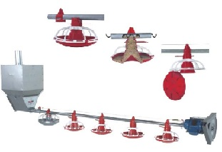
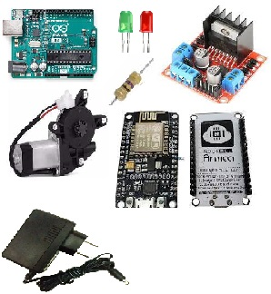
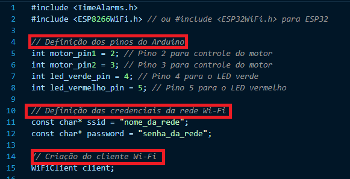
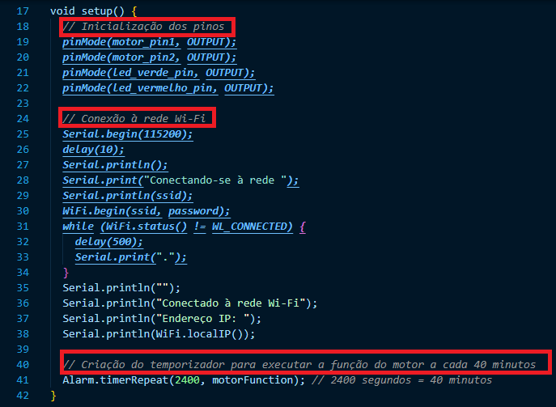
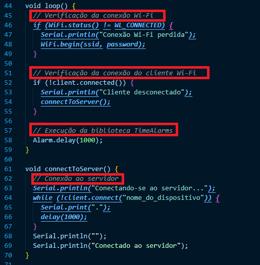
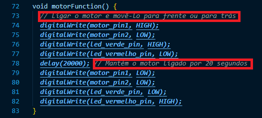
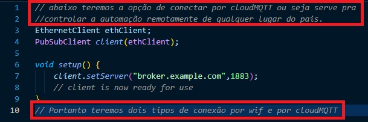

Na imagem e no video abaixo será possivel observar o que é a linha de ração de uma granja. "Seu funcionamento é muito simples e consiste no recebimento da ração em um depósito, e sua distribuição nos pratos do circuito, através de tubo galvanizado com um helicóide interno. O abastecimento da ração é controlado por um prato de controle unificado (final / individual) que liga e desliga o sistema automaticamente, levando em consideração o nível de ração existente. O sistema de regulagem da altura da linha é feito por guincho. Depósito desmontável e acionamento compacto, permitem a elevação das linhas mais próximas do pé-direito, facilitando a retirada das aves e a limpeza do aviário. (retirado de : http://agropanmg.com.br/produtos/avicultura/frango-de-corte/comedouro-tuboflex-individual/"

Materiais necessários: -Arduino Uno ou similar; -Módulo de controle de motor (L298N ou similar); -Motor de vidro de carro; -LED verde e vermelho; -Resistores para os LEDs; -Fonte de alimentação 12V; -Módulo Wi-Fi como ESP8266 ou ESP32

No video abaixo é possivel observar que é possivel movimentar o comedouro de ração para frente e para trás sem qualquer automção, com tanto que uma pesoa o movimente. Logo seria de um grande desgaste para o granjeiro rter que a cada 40 minutos ter que ir até o galpao e fazer este movimento. Este projeto portanto tende a facilitar o manejo.
No código abaixo será a configuração do Arduino junto com os Materiais a serem utilzados na automação. motor de vidro é controlado usando a biblioteca Servo.h, que permite controlar um servo motor. A configuração dos LEDs e dos pinos do motor é feita no setup e a lógica para acionar o motor e os LEDs é feita no loop. A variável "motor_ligado" é usada para saber se o motor está ligado ou não. O intervalo de tempo entre cada movimento é de 40 minutos e a duração do movimento é de 20 segundos. O código também inclui o desligamento do motor e a troca dos LEDs ligados para indicar se o motor está ligado (LED verde aceso) ou desligado (LED vermelho aceso).





Com os codigos mostrados nas imagens acima, é possivel finalizar esta etapa.
Portanto como mostrado no video o jeito manual de manipulação do comedouro é possivel imaginar que com o codigo feito e o sistema rodando conforme descrito as etapas no codigo será posivel de forma remota controlar todo o sistema, ligando desligando alterando conforme o cliente quiser o tempo de execução e o inervalo de tempo que devera ligar.